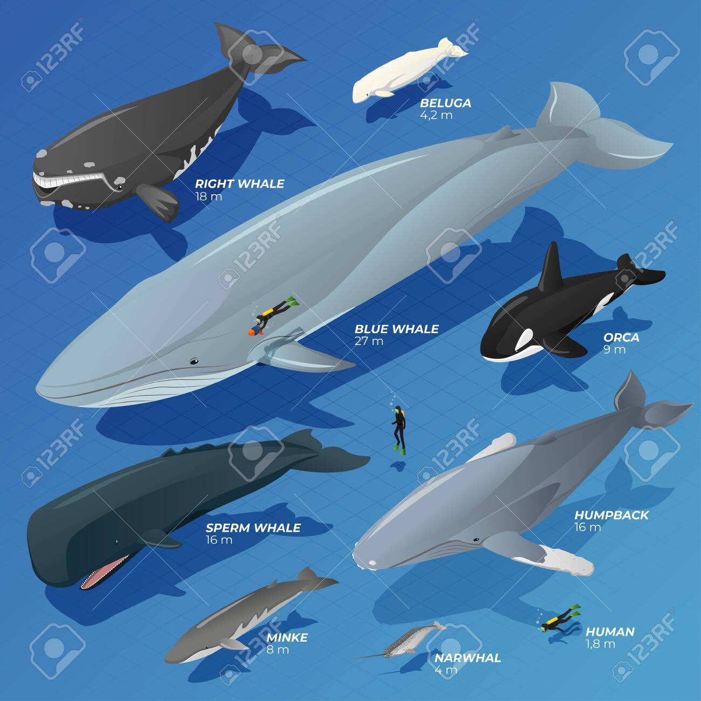

Tamaño y Peso
La ballena azul puede alcanzar hasta 30 metros de largo y pesar alrededor de 180 toneladas. ¡Es más larga que un autobús escolar y más pesada que 25 elefantes!

Comparación con Otras Ballenas
| Especie | Longitud Promedio | Peso Promedio |
|---|---|---|
| Ballena Azul | 25–30 m | 120–180 toneladas |
| Rorcual Común | 18–22 m | 50–80 toneladas |
| Ballena Jorobada | 12–16 m | 25–30 toneladas |
| Ballena Gris | 11–15 m | 30–40 toneladas |
Curiosidades
- El corazón de una ballena azul puede pesar más de 180 kg.
- Sus vocalizaciones pueden escucharse a más de 1,000 km de distancia.
- Viven en todos los océanos, excepto el Ártico.